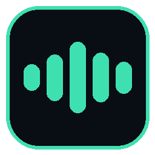
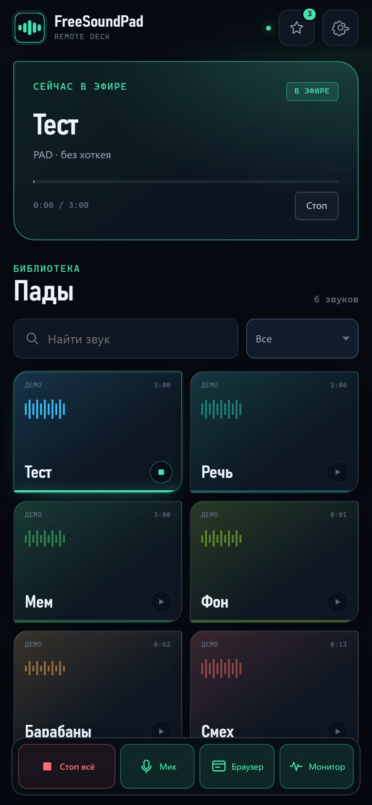

process loopback
Слышно только вкладку
Встроенный браузер на WebView2 захватывается по дереву процессов. Системные уведомления, голосовой чат и другие приложения в микрофон не попадают.
msedgewebview2.exe → wasapi loopback → mic

FreeSoundPad soundboard / browser / micТолько звук встроенного браузера — не всей системы
FreeSoundPad собирает пады, музыку и сайты в один виртуальный кабель. Голос, мемы и треки из встроенного браузера уходят собеседникам — без системного шума и лишних приложений.
Один микс. Ничего лишнего.
Что внутри
Не «ещё один SoundPad», а рабочий аудиомаршрут: библиотека, браузер и микрофон сходятся в мастер-шине и уходят туда, где тебя слышат.
process loopback
Встроенный браузер на WebView2 захватывается по дереву процессов. Системные уведомления, голосовой чат и другие приложения в микрофон не попадают.
msedgewebview2.exe → wasapi loopback → mic
one at a time
Новый звук останавливает предыдущий. Можно быстро переключать мемы, не собирая из них невольный ремикс.
large library
Библиотека выдаётся порциями по 60 карточек. Поиск с задержкой ввода, а прогресс обновляется только у активного пада.
1000 звуков в тесте
browser audio
Звук сайта идёт в микрофон или в наушники одной чистой копией — без двойного воспроизведения и лишнего шума. Переключатели просто выбирают маршрут.
overlay
Компактная версия — только пады и стоп. Большая — статусы, браузер, микрофон, мониторинг и настройки. Отдельная громкость мониторинга уже внутри.
hotkeys · monitor 80% · local / cable
web remote
Открой адрес из настроек FreeSoundPad в браузере телефона — и управляй падами, избранным, стопом, микрофоном, браузером и уровнями. Без установки второго приложения.
http://192.168.x.x:8765 · код доступа · только своя сеть
Как включить
Экраны
Пады с цветами, поиск, избранное и три канала MIC / PAD / WEB. Мастер-лимитер держит выход в узде.
Настройка
FreeSoundPad не притворяется драйвером. Для микрофона нужен виртуальный кабель — три шага, и тебя слышно.
Бесплатный виртуальный кабель. После установки перезагрузи ПК — иначе устройства могут появиться, но не пропускать звук.
vb-audio.com/CableВ FreeSoundPad выход — CABLE Input, мониторинг — свои наушники. Включи «Слышать локально», если хочешь контролировать звук.
В настройках голоса выбери микрофон CABLE Output. Нажми «Тест маршрута» в приложении и проверь индикатор.
Нет кабеля? Приложение работает в локальном режиме: пады слышны в выбранном устройстве, но отправить звук в микрофон нельзя. Без виртуального кабеля никак — это ограничение Windows.
Хоткеи
У падов нет биндов по умолчанию — назначай любую комбинацию: A + B, Ctrl + Shift + F, * + Num 0. Зажми клавиши и отпусти. Если комбинация уже занята, появится предупреждение. Одиночная клавиша без Ctrl / Alt / Shift просит подтвердить Enter.
Показать окно — Ctrl + Alt + F. Работают любые клавиши, включая PrintScreen, F13–F24 и мультимедиа. Для командных хоткеев приложение покажет предупреждение, если система не дала их зарегистрировать.
Вопросы
Windows не даёт обычному приложению стать микрофоном. Виртуальный кабель — это отдельное устройство: FreeSoundPad играет в него, а Discord читает из него как из микрофона.
Нет. Захват идёт только по процессу встроенного браузера, а пады и микрофон сводятся в приложении. Уведомления Windows, музыка из других приложений и голос из Discord в эфир не попадают.
Когда включена отправка в микрофон, прямой звук сайта приглушается, чтобы не было эха. Включи «Слышать локально» — появится копия в устройстве мониторинга.
Можно слушать пады и мониторить браузер, но отправить звук в микрофон — нет. Для Discord или игры нужен кабель: VB-CABLE, VoiceMeeter или Virtual Audio Cable.
Да. Список выдаётся порциями по 60 карточек, поиск вводится с задержкой, а прогресс обновляется только у активного пада. Проверено на 1000 звуках.
Да. Один exe, без установки .NET. Если рядом с exe создать пустой файл portable.txt, данные будут храниться в папке Data рядом с программой.
147 МБ · Windows 10 2004+ · без установки .NET · все настройки в одном окне